Mistakes Where Made
Why this?
This is a catalog of positions where I made some kind of mistake. They are collected from my own matches, at the moment mostly online matches at Backgammon Galaxy.
It is an automated report, first, using a Python script for GNU Backgammon to analyze my collection of matches, then my R-package Backgammon to turn the files with GNU BG analysis into a data frame, then this notebook with R-code to analyze that data.
I split the mistakes into checker plays and Cube actions.
Checker plays are grouped by Extra Large, Large, Medium and Small errors, with each section listing all errors in descending order of error size. (Perhaps it should be in descending order by time, so I can spot new additions when I update this?)
Cube actions are grouped by Double errors and Take errors, and again by Extra Large, Large, Medium and Small errors.
Checker plays
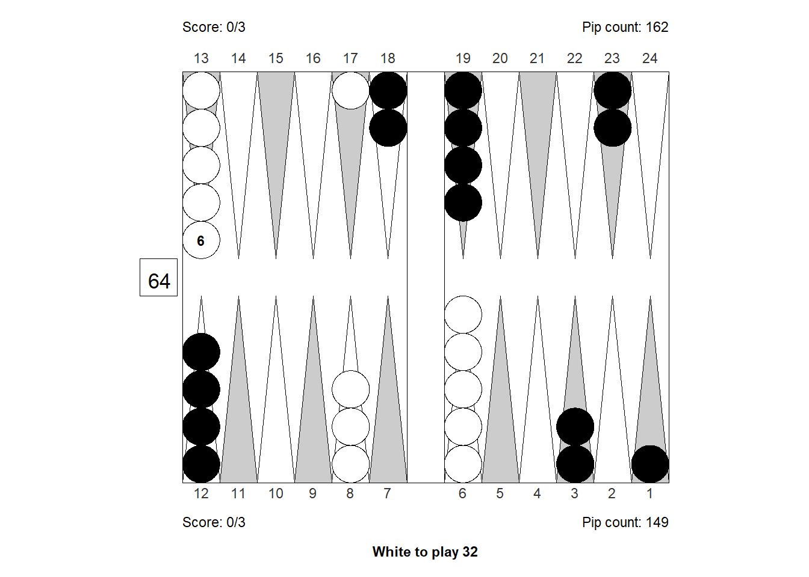
1. 4-ply 13/10 13/8 +1.126
* 2. 4-ply 8/5 7/2* +0.681 (-0.445)
3. 0-ply 7/4 7/2* +0.616 (-0.510)
4. 0-ply 13/10 8/3 +0.592 (-0.534)
5. 0-ply 13/10 7/2* +0.562 (-0.564)
XGID=-aaBBBBBA---cB---c-d-cA-A-:0:0:1:53:3:0:0:5:10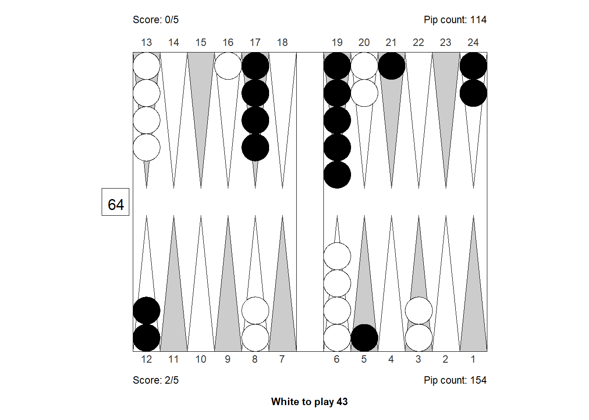
1. 4-ply 13/4 +0.761
* 2. 4-ply 20/11 +0.367 (-0.394)
3. 0-ply 20/16 6/1 +0.176 (-0.586)
4. 0-ply 20/15 6/2 +0.148 (-0.613)
5. 0-ply 20/15 13/9 +0.058 (-0.703)
XGID=--BCAdC-----bE----acAb-c--:0:0:1:54:0:0:0:3:10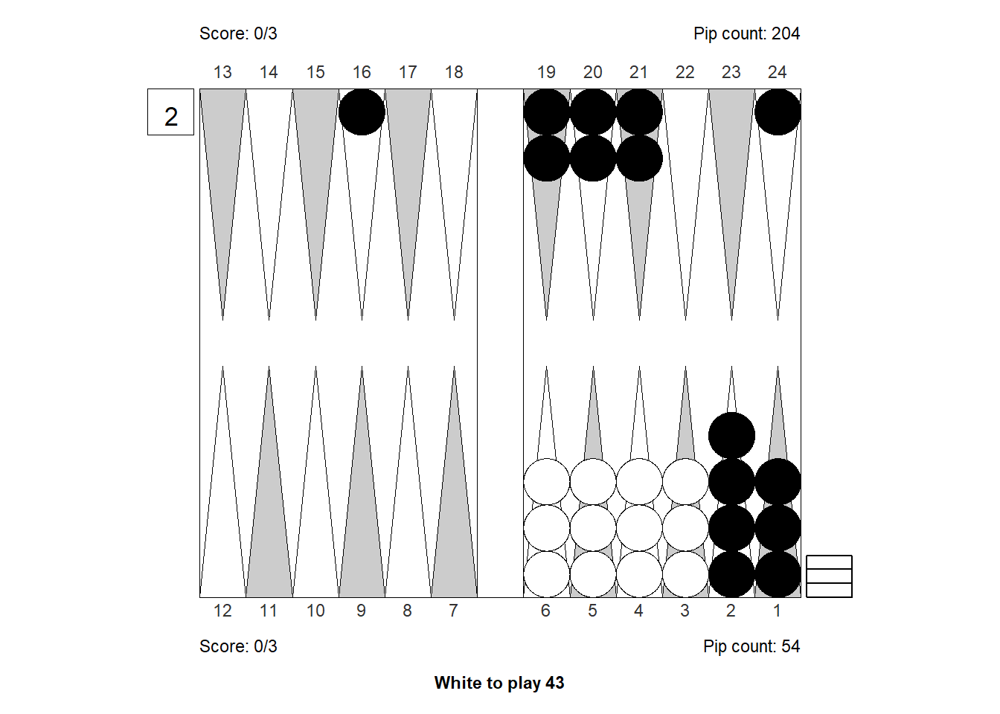
1. 4-ply 22/14 +0.402
* 2. 4-ply 13/10 13/8 +0.162 (-0.241)
3. 0-ply 22/17 6/3 -0.096 (-0.498)
4. 0-ply 13/5 -0.104 (-0.506)
5. 0-ply 22/17 13/10 -0.130 (-0.532)
XGID=-CBCB-B-----dB-----db-Acb-:0:0:1:53:0:0:0:3:10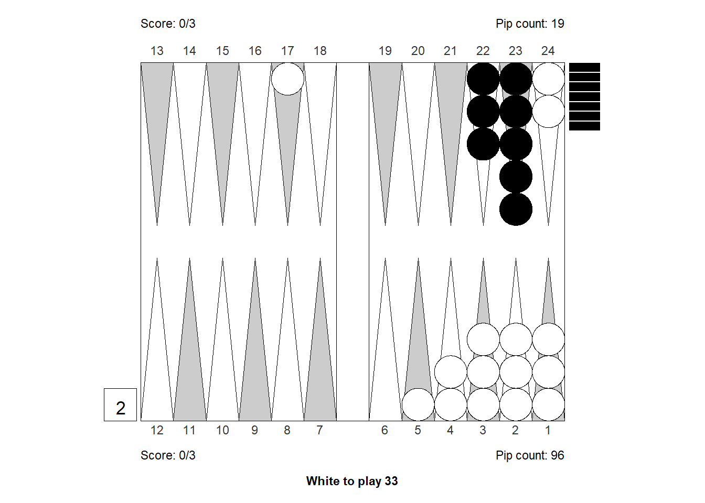
1. 4-ply bar/23(2) 6/4*/2* -0.049
* 2. 4-ply bar/23(2) 24/22 6/4* -0.311 (-0.262)
3. 2-ply bar/23(2) 13/9* -0.329 (-0.280)
4. 0-ply bar/23(2) 6/4*(2) -0.455 (-0.405)
5. 0-ply bar/23(2) 13/11 6/4* -0.473 (-0.423)
XGID=--aBaBCB-a--cBA--b-cbb--AB:1:1:1:22:1:0:0:5:10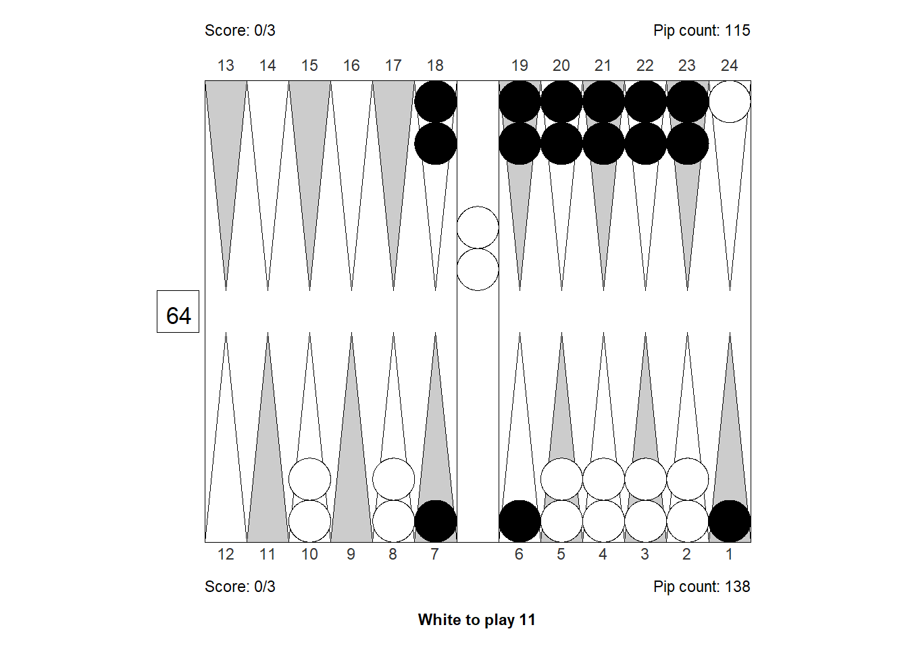
1. 4-ply 13/7(4) +0.264
* 2. 4-ply 13/1(2) +0.054 (-0.210)
3. 2-ply 13/7(3) 8/2 +0.032 (-0.232)
4. 2-ply 13/7(2) 8/2(2) +0.007 (-0.257)
5. 0-ply 13/1 13/7(2) -0.035 (-0.300)
XGID=---AAbD-C---bD--ccBb-ab---:0:0:1:66:0:1:0:5:10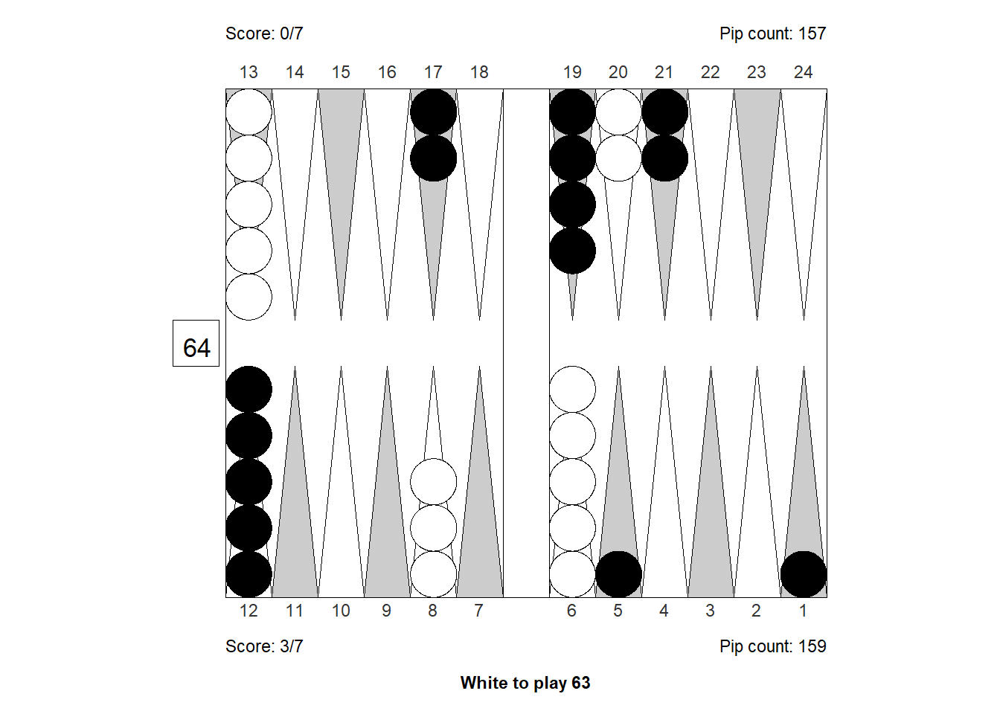
1. 4-ply 13/8 11/8 -0.038
2. 4-ply 11/8 11/6 -0.111 (-0.073)
* 3. 4-ply 13/8 6/3 -0.180 (-0.142)
4. 2-ply 11/3 -0.220 (-0.183)
5. 2-ply 13/10 6/1 -0.232 (-0.194)
XGID=-CC--cC----B-Daa--aba-bbb-:1:-1:1:53:1:4:0:7:10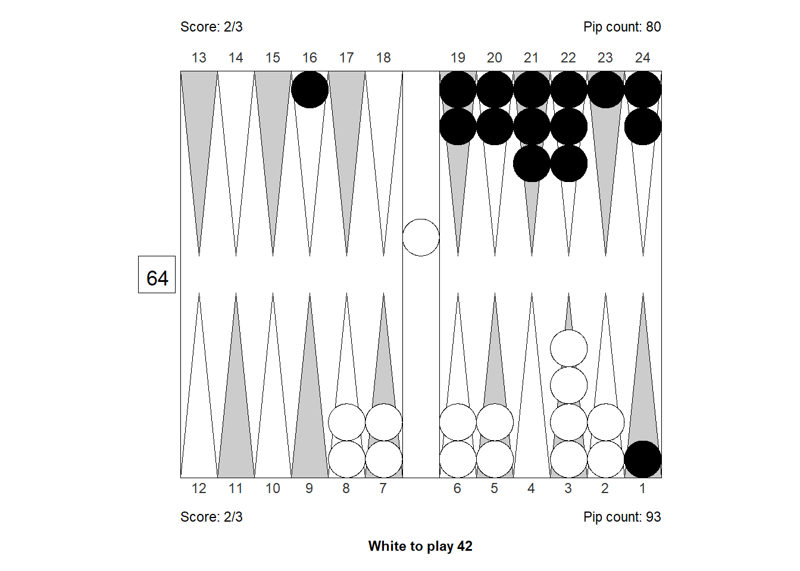
1. 4-ply bar/24(2) 8/7*(2) -1.334
* 2. 4-ply bar/24(2) 8/7*/6* -1.457 (-0.123)
3. 2-ply bar/24(2) 10/9(2) -1.410 (-0.076)
4. 2-ply bar/24(2) 2/1*(2) -1.550 (-0.216)
5. 2-ply bar/24(2) 5/4(2) -1.558 (-0.224)
XGID=-aBBBBaaB-B-------bbbbbbAB:0:0:1:11:0:0:0:3:10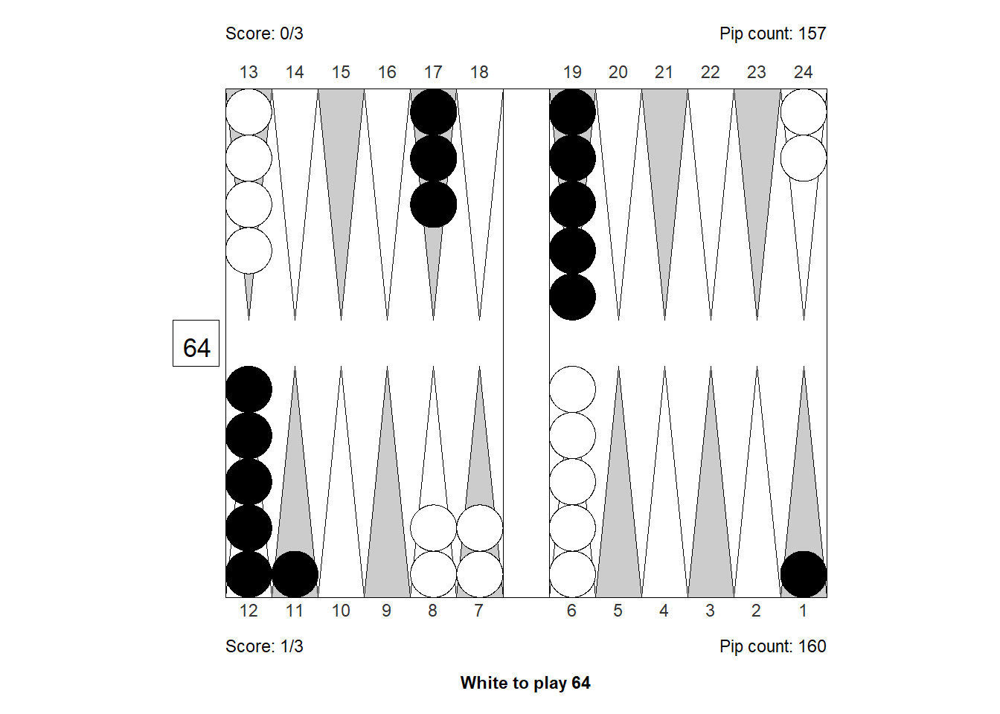
1. 4-ply 5/off 4/3 +0.840
* 2. 4-ply 5/off 3/2 +0.707 (-0.133)
3. 2-ply 6/1* 4/3 +0.642 (-0.198)
4. 2-ply 6/1* 3/2 +0.526 (-0.315)
5. 2-ply 6/1* 2/1 +0.518 (-0.322)
XGID=-aCAECCa----a-------bbbbd-:0:0:1:51:2:0:1:3:10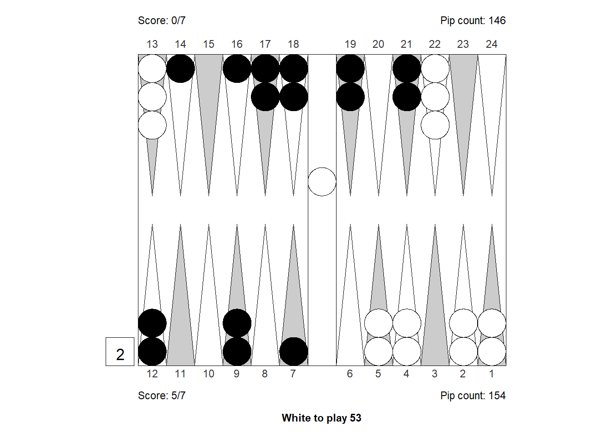
1. 4-ply bar/20 13/10 -0.848
* 2. 4-ply bar/22 13/8 -0.989 (-0.140)
3. 2-ply bar/20 5/2 -0.968 (-0.120)
4. 2-ply bar/20 4/1 -0.986 (-0.138)
XGID=-BB-BB-a-b--bCa-abbb-bC--A:1:1:1:53:5:0:0:7:10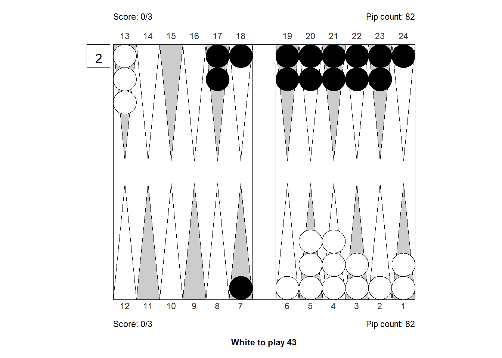
1. 4-ply 13/6 +0.045
* 2. 4-ply 6/2 5/2 -0.096 (-0.141)
3. 2-ply 6/2 4/1 -0.121 (-0.166)
4. 2-ply 6/3 5/1 -0.217 (-0.261)
5. 2-ply 5/2 5/1 -0.235 (-0.279)
XGID=-BABCCAa-----C---babbbbba-:1:-1:1:43:0:0:0:3:10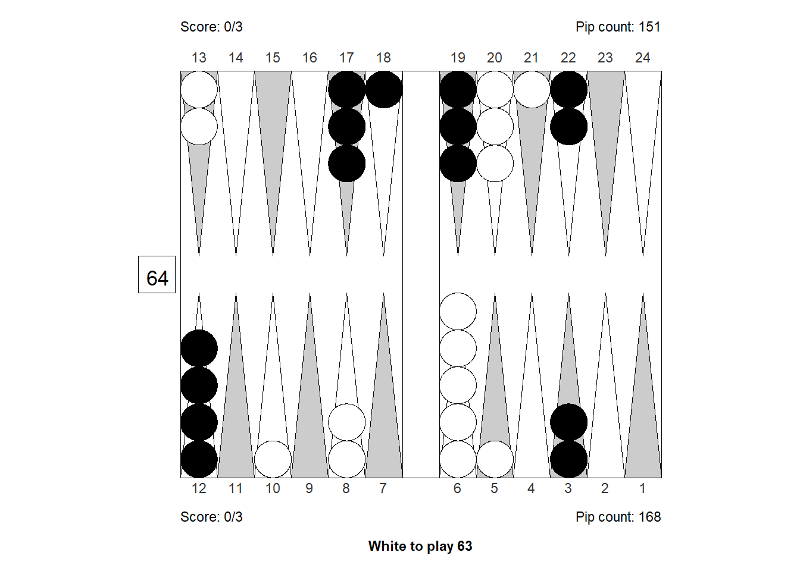
1. 4-ply 4/off 3/off +0.860
* 2. 4-ply 4/1* 4/off +0.780 (-0.080)
XGID=-aECB-------------a-bbccc-:1:-1:1:43:0:1:0:7:10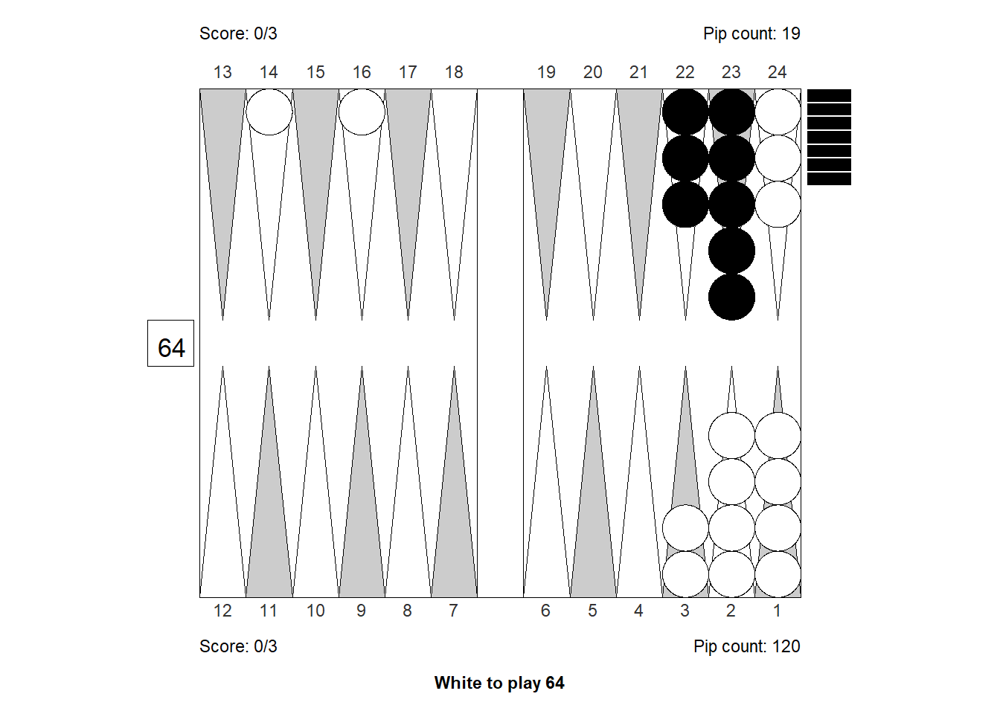
1. 4-ply 13/7*/1(2) +0.477
* 2. 4-ply 24/18 13/7*(3) +0.384 (-0.093)
3. 2-ply 13/7*(4) +0.288 (-0.189)
4. 2-ply 13/7*(3) 8/2 +0.287 (-0.189)
5. 2-ply 24/18 13/7*(2) 8/2 +0.266 (-0.211)
XGID=--B---CaC---cE-b-d-e-A--A-:0:0:1:66:1:2:1:3:10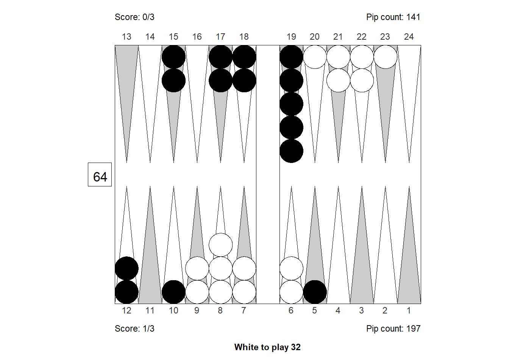
1. 4-ply 23/20 7/5* -0.463
2. 4-ply 22/20 8/5* -0.471 (-0.008)
* 3. 4-ply 8/5* 7/5 -0.547 (-0.084)
4. 2-ply 23/20 8/6 -0.537 (-0.074)
5. 2-ply 23/20 6/4 -0.586 (-0.124)
XGID=-----aBBCBa-b--b-bbeABBA--:0:0:1:32:1:0:0:3:10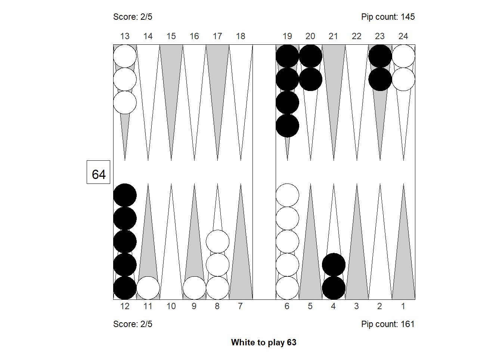
1. 4-ply 13/7 8/7 -0.214
2. 4-ply 22/15 -0.218 (-0.004)
3. 4-ply 13/7 6/5 -0.219 (-0.005)
4. 4-ply 13/7 9/8 -0.226 (-0.012)
* 5. 4-ply 22/21 22/16 -0.265 (-0.052)
XGID=--a--BC-BA--dC---cbe-BB---:0:0:1:61:0:0:0:3:10
1. 4-ply 21/15 7/4 -0.342
2. 4-ply 8/2 7/4 -0.369 (-0.026)
* 3. 4-ply 21/12 -0.393 (-0.051)
4. 2-ply 9/6 9/3 -0.521 (-0.178)
5. 2-ply 9/3 7/4 -0.541 (-0.199)
XGID=-B-B-bBACB---a---bbccCb---:1:1:1:63:1:0:0:3:10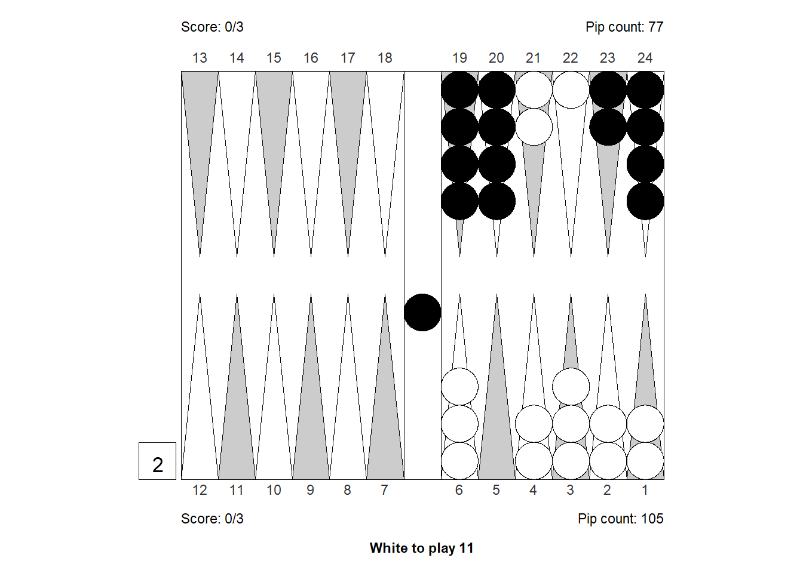
1. 4-ply 6/5(2) 4/3 1/off +2.397
2. 4-ply 6/5(2) 4/2 +2.373 (-0.024)
* 3. 4-ply 6/5(2) 1/off(2) +2.351 (-0.046)
4. 4-ply 6/5(2) 3/2 1/off +2.322 (-0.075)
5. 2-ply 4/2 1/off(2) +2.347 (-0.050)
XGID=cDBDC-B-----b----bbdb-----:1:-1:1:11:0:2:0:5:10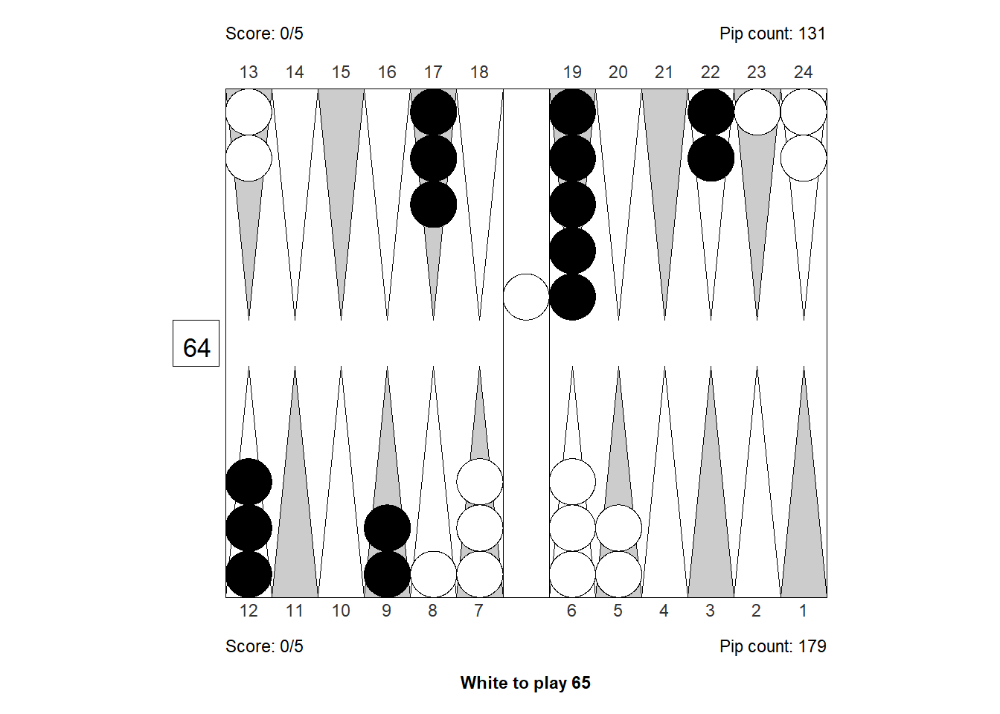
1. 4-ply 21/15 +0.296
* 2. 4-ply 13/7 +0.263 (-0.033)
3. 0-ply 21/16 5/4* -0.140 (-0.436)
4. 0-ply 13/8 5/4* -0.194 (-0.489)
5. 0-ply 21/16 6/5 -0.265 (-0.561)
XGID=bBBBaBB-----bC---b-bbBd---:0:0:1:51:2:1:0:3:10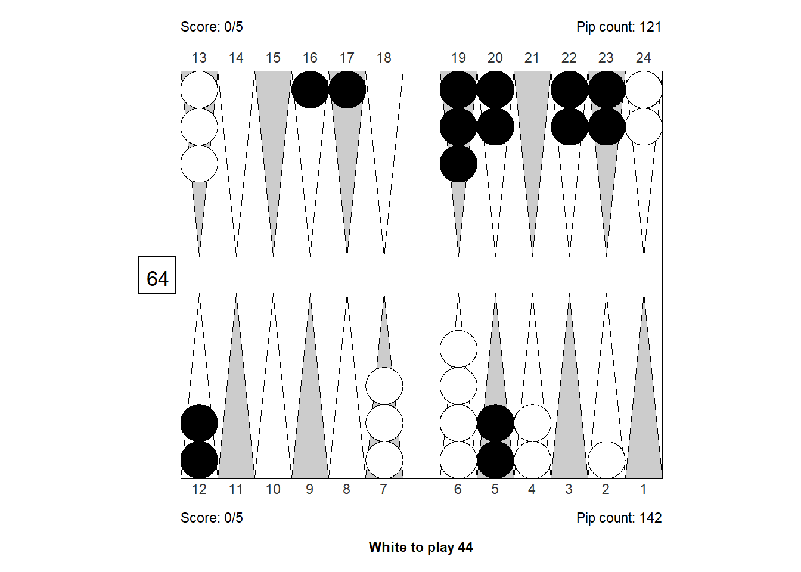
1. 4-ply bar/18 -0.256
* 2. 4-ply bar/20 24/22 -0.294 (-0.038)
3. 4-ply bar/20 13/11 -0.302 (-0.046)
4. 4-ply bar/20 6/4 -0.328 (-0.071)
5. 0-ply bar/20 8/6 -0.678 (-0.422)
XGID=-a--B-DaB--BdC---c-d---bAA:0:0:1:52:3:1:0:5:10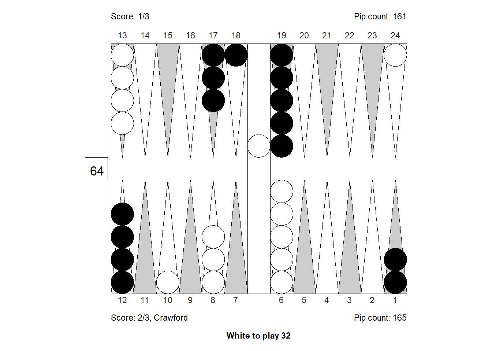
1. 4-ply 13/9*/7 13/11 +0.720
2. 4-ply 13/11(2) 8/6(2) +0.708 (-0.012)
3. 4-ply 13/9*/5 +0.704 (-0.016)
* 4. 4-ply 13/9*(2) +0.698 (-0.022)
5. 2-ply 13/11(2) 7/5(2) +0.668 (-0.052)
XGID=-B-bCBBBBa--bBaaaa----bbb-:2:-1:1:22:0:0:0:3:10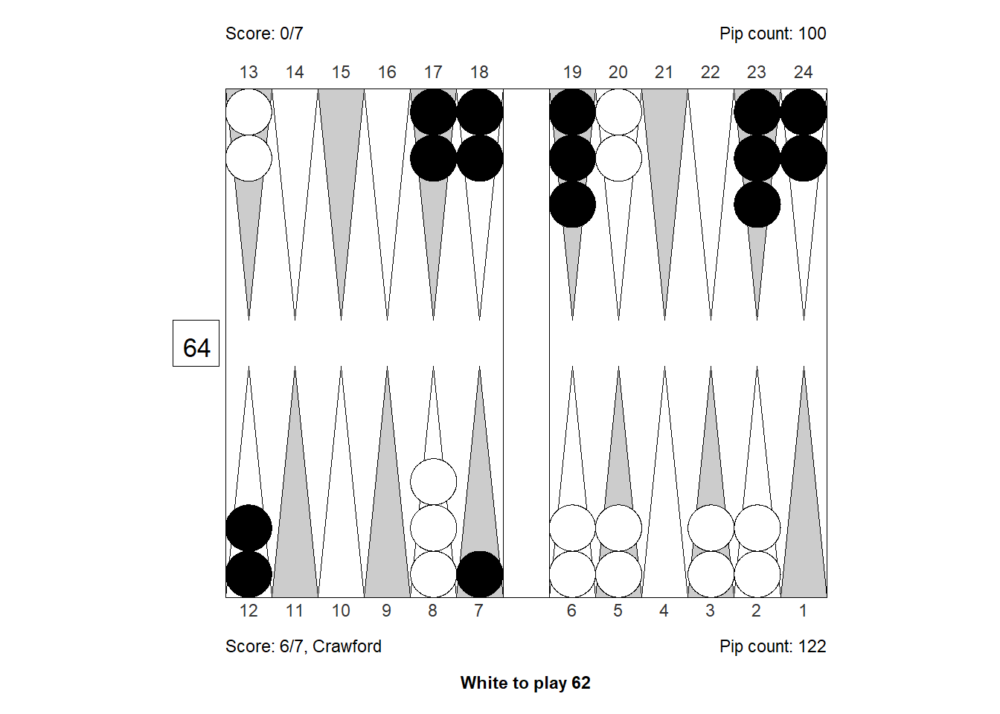
1. 4-ply 12/11 3/1 +0.881
2. 4-ply 12/10 2/1 +0.870 (-0.011)
3. 4-ply 3/1 2/1 +0.862 (-0.019)
4. 4-ply 12/10 3/2 +0.860 (-0.021)
* 5. 4-ply 12/9 +0.841 (-0.040)
XGID=aBCCBBB-----A------cbcdb--:0:0:1:21:2:0:1:3:10